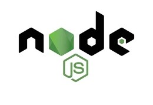

HTML stands for HyperText Markup Language. It is used to design the web pages. With the help of HTML, you can create a complete website structure. HTML is the combination of Hypertext and Markup language. Hypertext defines the link between the web pages and markup language defines the text document within the tag that define the structure of web pages.
CSS (Cascading Style Sheets) is used to styles web pages. Cascading Style Sheets are fondly referred to as CSS. The reason for using this is to simplify the process of making web pages presentable. It allows you to apply styles on web pages. More importantly, it enables you to do this independently of the HTML that makes up each web page.
JavaScript (JS) is the most popular lightweight, interpreted compiled programming language. It can be used for both Client-side as well as Server-side developments. JavaScript also known as a scripting language for web pages. This JavaScript Tutorial is designed to help both beginners and experienced professionals master the fundamentals of JavaScript and unleash their creativity to build powerful web applications. From basic syntax and data types to advanced topics such as object-oriented programming and DOM manipulation.
.png)
ReactJS is a declarative, efficient, and flexible JavaScript library for building user interfaces. It is an open-source, component-based front-end library that is responsible only for the view layer of the application. ReactJS is not a framework, it is just a library developed by Facebook to solve some problems that we were facing earlier.

ode.js is an open-source and cross-platform JavaScript runtime environment. It is a popular tool for almost any kind of project! t is used for server-side programming, and primarily deployed for non-blocking, event-driven servers, such as traditional web sites and back-end API services, but was originally designed with real-time, push-based architectures in mind. Every browser has its own version of a JS engine, and node.js is built on Google Chrome’s V8 JavaScript engine.
MongoDB is built on a scale-out architecture that has become popular with developers of all kinds for developing scalable applications with evolving data schemas. As a document database, MongoDB makes it easy for developers to store structured or unstructured data. It uses a JSON-like format to store documents.